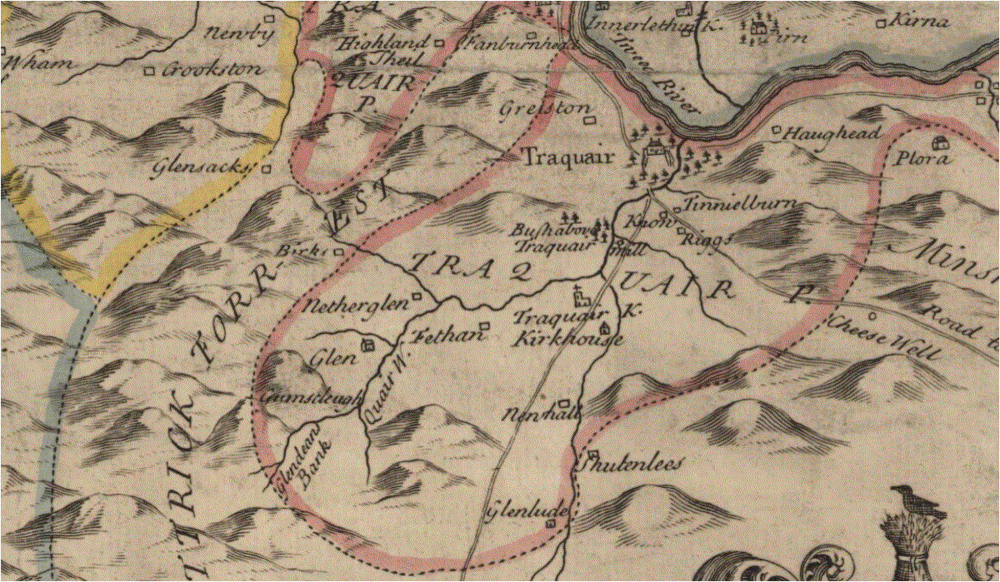

|
Veitch
Index
Veitch Family Lineages
Veitch of Fethane and The Glen
Traquair Parish, Peeblesshire

Veitch lands of Fethane and The Glen, Traquair
Parish, Peeblesshire
New and Correct Map of the shire of Peebles or Tweeddale
surveyed by Will Edgar, 1741
_______ Veitch.
1(i). Adam Veitch of Feythen. He made a compliant to
the Privy Council in 1603
1603, Feb. 24. Complaint to the Privy Council by Adam Veitch
in Fethane, who states that on the 5th instant, William and Thomas
Scott of Hundleshope, with others their accomplices, 'all bodin
in feir of weir, with hacquebettis and pistoletts, came to the
lands of Fethane, and thair cuttit and distroyit the said complenaris
gangand pleuch, reft and tuke away his plew-irons, and schamfullie
and unhonesthe dang his plewmen, and left them for deid.' The
complainer proceeds to mention that the outrage had been incited
by Scott of Hayning and Scott of Thirlstane, who, along with
the actual perpetrators not appearing, are denounced rebels.
Privy Council Record.
1605 - Register of the Privy Council of Scotland Vol 7,
page 601 - to present William Scott, called of Hundilshoip, Thomas
Scott, his brother, James Scott, called James ‘Afhand, Walter
Scott, brother of the said Robert, and Mr Arthour Scott of Gemmilscleuch,
alleged to be his men, before the Lords of Secret Council upon
27th instant, to answer to a complaint against them by Adame
Veitche in Fechen touching their breaking of the doors of his
house, destroying his whole timber work therein, and committing
other acts of oppression, under the pain of 500 merks.
married _________
His children:
2(i). David Veitch - named as son of Adam Veitch of Fethane
in 1609
1609 - Register of the Privy Council of Scotland Vol 8,
page 338 -Action by Mr Johue Elphingstoun, heritable tenet of
the lands of Fechane, against Adam Vetche in Fechane, David Vetche,
his son, and Marioun Vetche, spouse of James Dicksonn, for remaining
unrelaxed from a homing of 21st July last for not removing from
said lands of Fechane. Pursuer appearing by Archibald Douglas,
decree against defenders as in the last Act.
1(ii). Alexander Veitch of Feythen. Named as a brother
to Adam Veitch in 1590
1590 Caution by Alexander, Lord Hume, and Hew, Lord Somervile,
for James Twedy of Drummelzeair in 5000 rnerks, for Adam Tuedy
of Dreva ia caution for£2000, for Williame Tuedy of the
Wra in 2000 merks, for Johnne Creich- Tweedie of toun of Quarter
and Thomas Porteous of Glenkirk in 1000 merks each, and his friends,and
for Andro Crechtoun of Cordon in 500 merks, that Williame Veche
of Dawik, Williame Veche, his son, George Veche, brother to the
said Williame Veche of Dawik, James Veche in Curop, Adam Veche
in Feythen, Alexander Veche, his brother, Alexander Veche in
Hammiltoun, Alexander Veche in Peblis, Eobert Veche, son of Walter
Veche in Syntoun, Johnne Veche in Clerkland, and Johnne Veche,
son of the said Walter Veche in Syntoun, shall be harmless of
the said persons.
James Veitch in Garrallfoot
in the parish of Linton in Peeblesshire, of Wester Glen in 1664
Married _______
Children:
1(i). Alexander Veitch of Glen, Traquair Parish, and sometime
in Culteraise, seized of 1/2 of the lands at Glen in 1668.
He was alive in 1699.
1665 May 13 - General Services of Heirs - Alexander Veatch
in Culteraise, heir of James Veatch in Garrellfoot, his father
Married Helen Lawson in 1655, daughter of Mr James
Lawson of Cairnmuir
1689 May - General Register of Sasines - Peebles, Sasine
of Helen Lawson spouse to Alexr Veatch of Glen of an annual rent
of L?24 out of Wester Glen (lib 59/269)
Children:
2(i). Alexander Veitch of Glen, only son. Seised of
Wester Glen in 1689. He was alive in 1724.
1687 May - General Register of Sasines - Peebles - Sasine
of Alexander Veatch only lawful son to Alexr Veatch of Glenof
the lands of Wester Glen (lib 59/272)
Married Ages Scott, daughter of John Scott of W[ ].
Marriage contract dated [ ] 1698. Seised of an annuity of of
Wester Glen in 1722.
Children:
3(i). James Veitch of Glen, only son. Known as 'the
younger' at the time of his marriage. Seized with his wife of
Wester Glen in 1724
1724 Dec 10 - General Register of Sasines - Sasine of James
Veitch son to Alexander Veitch of Glen and Jean Thomason his
spous of the lands of Glen called Wester Glen dated 12 Nov. Presented
by Robt Veitch servitor to William Veitch writer in Edinburgh
(lib 124/158)
Married Jean Thomson on 28 November 1722 at Peebles,
daughter of James Thomson.
Index of Coventers
VEITCH, Alexander born about 1650 of Glen, Scotland bk 23
vol 6, pg. 4 - (Veatch) (William)
VEITCH, William born about 1650 of Glen, Scotland bk 23 vol 6,
pg. 4 - tenant to the Laird of Glen
Deeds
Alexander Veitch of Glen; Grantee; 22 Nov 1672; 32/297
Index of Sasines
1668 June 12 Peebles - Alexander Veatch portioner of Glen
19/333
1689 May 10 Peebles - Alexander, son of Alexander Veatch of
Glen 59/272
1689 May 10 Peebles - Helen Lawsone, sp: of Alexander Veatch
of Glen 59/269
|